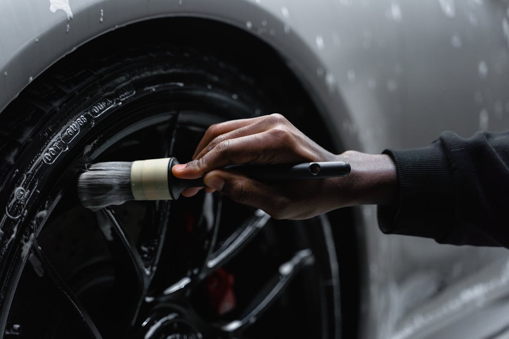
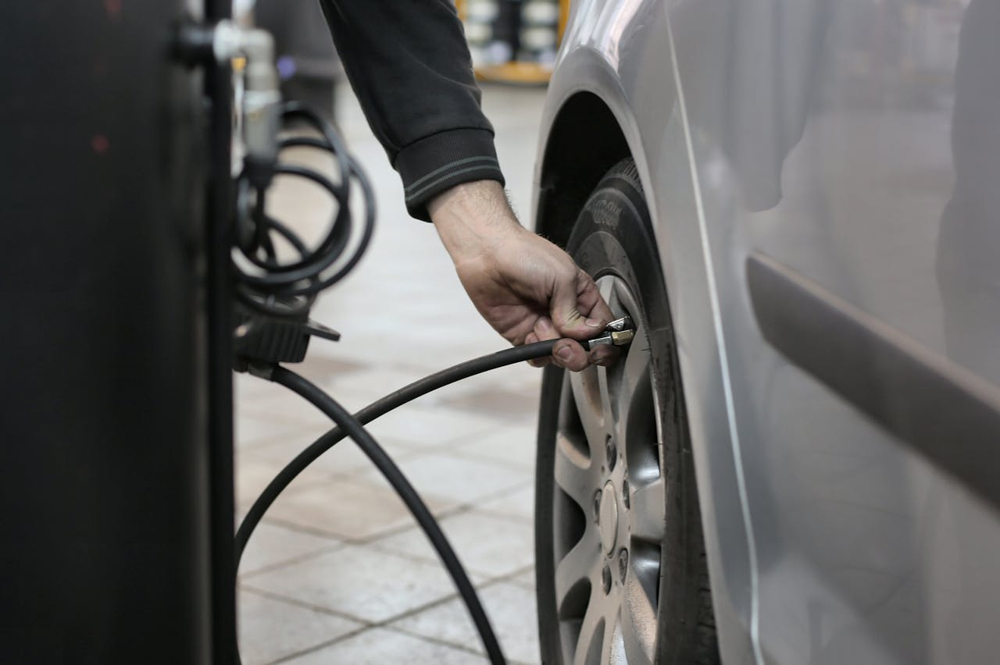

В современном автосервисе важное место занимает комплексное техническое обслуживание автомобиля. Ремонт автомобиля требует точного диагностирования неисправностей и качественного устранения проблем. При регулярном обслуживании повышается надежность всех систем, что обеспечивает безопасность и долговечность транспортного средства.

Мойка автомобиля — не только эстетическая процедура, но и важная часть ухода за кузовом и деталями машины. Регулярная мойка помогает предотвратить коррозию и сохранить лакокрасочное покрытие в хорошем состоянии. Для правильного ухода используются специализированные средства и технологии, учитывающие особенности покрытия и конструктивные элементы.
Шиномонтаж — критически важная процедура, обеспечивающая безопасность на дороге. Правильная установка, балансировка и сезонная замена шин влияют на управляемость и тормозные характеристики автомобиля. Специалисты автосервиса внимательно проверяют состояние покрышек и дисков, рекомендуют оптимальное время для замены и проводят все работы с учетом требований производителя.
Качественный ремонт автомобиля основан на современных методах диагностики и техническом анализе. Использование специализированного оборудования позволяет выявлять неисправности на ранних этапах и предотвращать серьезные поломки. В ходе ремонта применяются сертифицированные запчасти и стандартизированные технологии, что гарантирует сохранение технических характеристик машины.

Регулярный уход и сервис автомобиля помогают сохранять его техническую исправность и внешний вид, что положительно влияет на срок эксплуатации и безопасность движения. Образовательный подход в области ремонта, мойки и шиномонтажа позволяет лучше понимать процессы, влияющие на состояние автомобиля, и повышает уровень квалификации специалистов.
Изучение особенностей ремонта и обслуживания способствует развитию навыков правильного ухода за автомобилем и выбору оптимальных методов диагностики и ремонта. Это важный аспект для специалистов автосервиса и всех, кто стремится к продлению срока службы транспортного средства.